トラブル
画面が固まった時
その１
「Ctrl」+「Alt」+「Delete」を同時に押す
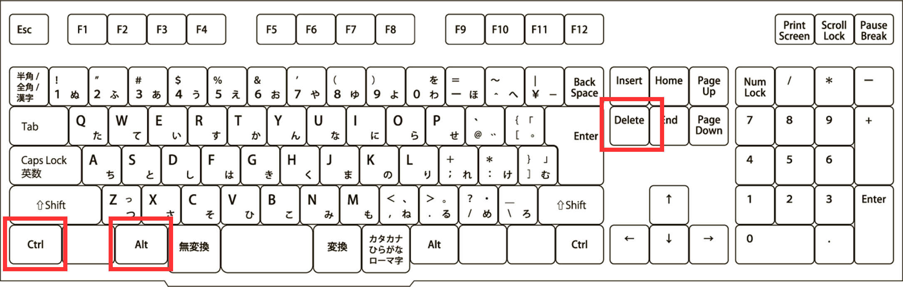その２
キーボードの「↓」をクリックして「タスクマネージャー」を選択し、「Enter」
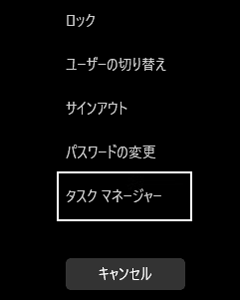その３
Google Chromeを「右クリック」→「タスクの終了」
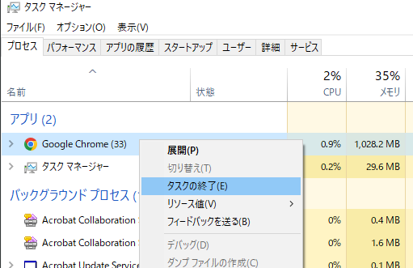その４
Google Chromeが消えたことを確認します
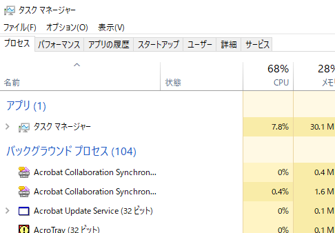その５
左上にあるChromeをダブルクリックして再スタート！
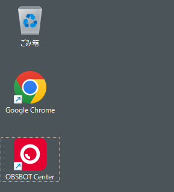ネット回線が繋がらない時
その１
画面の表示がこのようになった時、配線をチェックしましょう
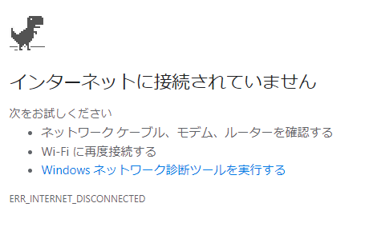その２
まずは壁側のLANケーブルがキチンと接続されているかチェック
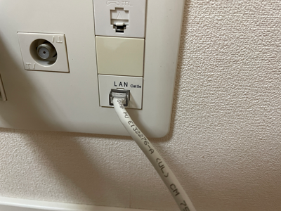その３
次にパソコン側のLANケーブルがキチンと接続されているかチェック
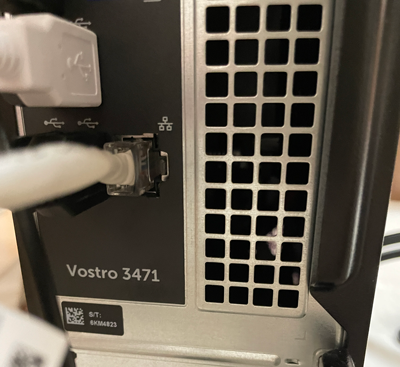その４
ブラウザの左上にある「再読み込み」のマークをクリックして再スタート
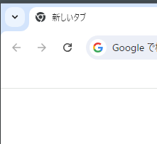パソコンの再起動
その１
左下のスタートボタンをクリックし、電源マークをクリック
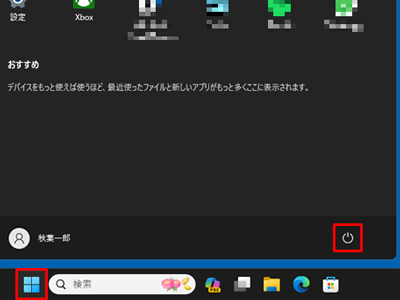その２
表示されたメニューから再起動をクリック
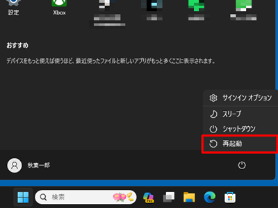その３
左上にあるChromeをダブルクリックして再スタート！
それでもダメな時
その１
それでもダメな時はパソコンの電源ボタンを長押しします
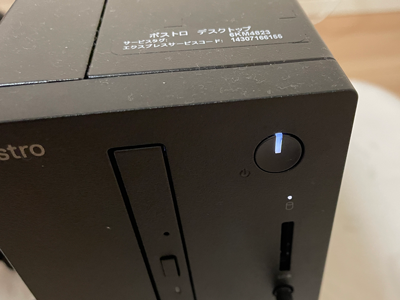その２
電源ボタンの光が消えるまで長押しします
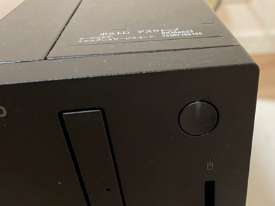その３
再度、電源ボタンを押して光が付いたのを確認します
その４
左上にあるChromeをダブルクリックして再スタート！